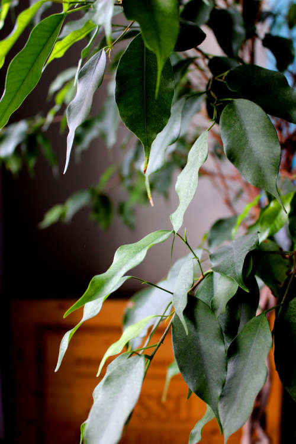
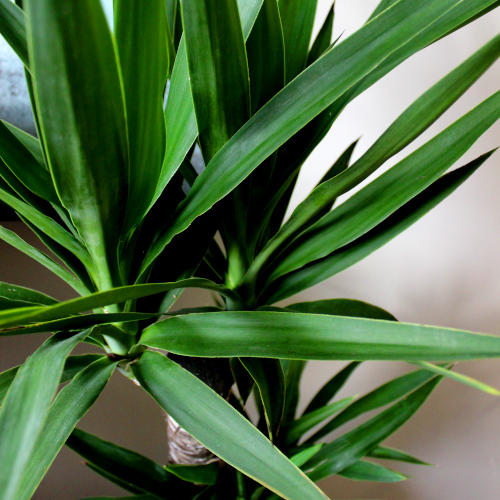
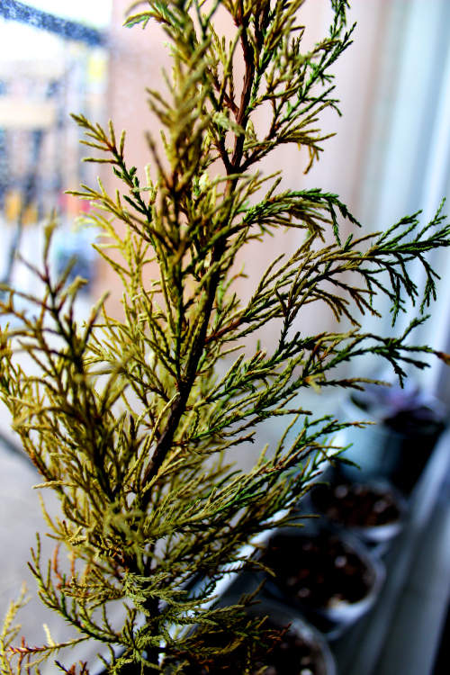

These are my trees and shrubs. Our ficus has been with us the longest, and our tropical tree is a new addition. We also have a tiny conifer tree, whom we have named Jasper. I believe he is a juniper. At this time, however, he is struggling to adapt to our home and would perhaps prefer to live outside.

Bentley is a ficus. He was a gift for my 25th birthday and is our first tree. Bentley is named after a small and playful dog we once met at a party.

This is Mark, another tropical tree.

This is Jasper.